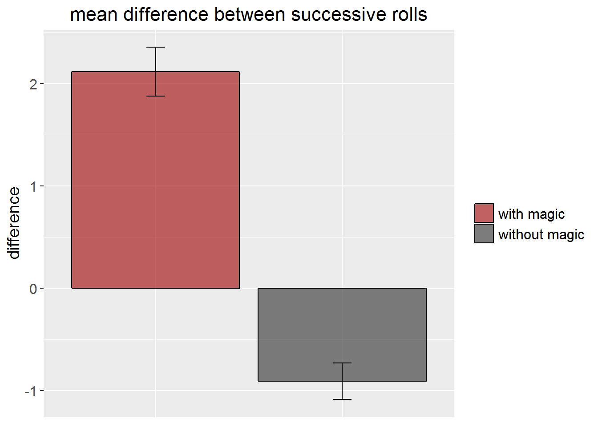
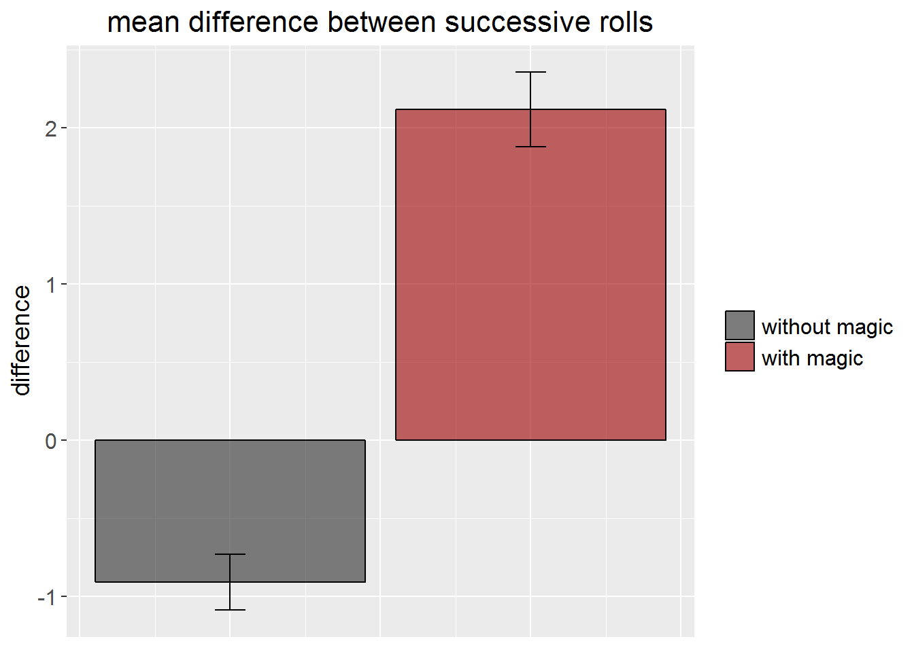

4 data analysis
4.1 die improvement as a function of magic
Let’s first get an overview. I would like to see a summary of the difference between successive rolls - depending on if magic has been used or not. I ask for a summary of all the rows in diff where no magic happened before (magic_before == 0) and for a separate summary of all the rows where the die was enchanted (magic_before == 1).
summary(dd$diff[dd$magic_before == 0])## Min. 1st Qu. Median Mean 3rd Qu. Max. NA's
## -5.0000 -2.0000 -1.0000 -0.9071 1.0000 3.0000 1summary(dd$diff[dd$magic_before == 1])## Min. 1st Qu. Median Mean 3rd Qu. Max.
## -1.000 1.000 2.000 2.119 3.500 5.000
Remember: That NA is produced because the first row of diff does not contain a value because there is no previous roll to compare it to.
But more importantly: Holy cow! Looks like there is an effect of magic! Look at the median of each group! Not very intuitive when presented like that, isn’t it? Let’s rather visualise the data.
4.1.1 prepare a dataframe for a plot
I would like to create a bar plot comparing the difference with magic vs. without magic - along with some error bars representing the standard error. Now, there are several ways to achieve this. Base R itself does not have a function for the standard error. However, it has one for the standard deviation, which is part of the formula to calculate the standard error.
We want to prepare a data.frame that we can plot later. And we can produce the column containing the standard error like this:
se <-
tapply(dd$diff, dd$magic_before, sd, na.rm = TRUE)/
c(sqrt(length(dd$diff[dd$magic_before == 0])),
sqrt(length(dd$diff[dd$magic_before == 1])))
Okay, this looks a bit wild. We can understand what’s going on by running each piece of code separately. First, tapply gives us the standard deviation sd of the column diff - separately for each group of magic_before. Here, the sd for “no magic” is about 2.12 and for “magic” it is about 1.83.
Note that we need to set na.rm = TRUE so R will ignore the missing value. Otherwise, we’ll end up with NA as result.
tapply(dd$diff, dd$magic_before, sd, na.rm = TRUE)## 0 1
## 2.118424 1.829686
We need to divide the standard deviation by the square root of the sample size. This is what the second part of the code does: It calculates the square root of the size of each group (magic or not). That is, right at the core of all the brackets in the first line, we select the rows containing the difference (dd$diff) for the rolls where no magic happened ([dd$magic_before == 0]). Then we wrap that in length to get the number of elements (i.e. the number of rolls where no magic happened before). And lastly, we calculate the sqrt of the whole thing. In that case, it’s simply the square root of 141. We have much more rolls where no magic happened.
c(sqrt(length(dd$diff[dd$magic_before == 0])),
sqrt(length(dd$diff[dd$magic_before == 1])))## [1] 11.874342 7.681146
In the whole thing you saw above, we divided the vector containing the sd by the vector containing the sqrt of the sample size. So, se now looks like this:
se## 0 1
## 0.1784034 0.2382048
Right. What does the data.frame we want to plot need? One column, magic, containing the condition (with or without - I used the spaces as a quick and dirty solution to have more space between the legend icons and the legend text in the plot). A second one, diff, containing the mean difference for each group - again, we use tapply to calculate that. Don’t forget na.rm! And then, of course, a column containing the standard error - se which gets assigned the values of se that we calculated before. I wrapped the whole thing in parentheses so the outcome is printed even though it usually isn’t when assigning something to a variable.
(plot_data <-
data.frame(magic = c(" without magic", " with magic"),
diff = tapply(dd$diff, dd$magic_before, mean, na.rm = TRUE),
se = se))## magic diff se
## 0 without magic -0.9071429 0.1784034
## 1 with magic 2.1186441 0.23820484.1.2 plot it
Cool. After all this work, let’s finally reward ourselves with a plot!
ggplot(plot_data, aes(y = diff, x = magic, fill = magic)) +
geom_col(colour = "black", alpha = .6) +
scale_fill_manual(values = c("#9e0000", "#2d2d2d")) +
geom_errorbar(aes(ymin = diff - se, ymax = diff + se), width = .1) +
labs(title= "mean difference between successive rolls", y = "difference") +
theme(plot.title = element_text(size = 16, hjust = .5),
axis.title.y = element_text(size = 14), axis.title.x = element_blank(),
axis.text.y = element_text(size = 12), axis.text.x = element_blank(),
axis.ticks.x = element_blank(),
legend.text = element_text(size = 12), legend.title = element_blank())
Again, this looks a bit wild because I customised so many things about this plot. ggplot2 can be quite tempting by providing so many options. In general, I created a plot with ggplot using plot_data as data source. I picked diff to be shown on the y-axis and magic on the x-axis. That would have been enough, but I also wanted to have different colours for each group, so I picket fill = magic.
I wanted a bar plot, so I used geom_col for that (by intuition, you might want to use geom_bar, but then you need to add stat = "identity" as per default, geom_bar will want to use the count of each category on the y-axis). For the bars, I want a black outline and I want them to be slightly transparent (alpha = .6). Because I also want to manually pick the colours of the two bars, I specify them with scale_fill_manual.
We also wanted to add standard errors. I can do that with geom_errorbar. For each bar, the minimum of the errorbar should be the mean (i.e. the height of the bar) minus the standard error. While the maximum of the error bar is the mean plus the standard error. I also pick a width of the vertical lines at the end of the bars. Next, labs adds some labels: a title for the plot and one for the y-axis (because otherwise, it just would be called diff). In theme, I get rid of the x-axis title because it is pretty redundant given the legend and the x-axis title.
The rest is mainly resizing all the text because per default, it would be ridiculously small in thos Notebook.
4.1.3 is there a tidy way?
That was a bit of a struggle. However, ggplot2 is a native of the tidyverse, so we should look at a tidy way to create this graph. A really convenient thing is that ggplot2, in fact, comes with a function for the standard error. And for the mean, by the way. No need to manually create a data.frame before - but this was the first way I learned it and I think it makes you think a bit more about what you actually want to plot.
dd %>%
na.omit() %>%
ggplot(aes(y = diff, x = magic_before, fill = factor(magic_before))) +
stat_summary(fun.y = mean, geom = "col",
colour = "black", alpha = .6) +
stat_summary(fun.data = mean_se, geom = "errorbar",
width = .1) +
scale_fill_manual(values = c("#2d2d2d", "#9e0000"),
labels = c(" without magic", " with magic")) +
labs(title= "mean difference between successive rolls", y = "difference") +
theme(plot.title = element_text(size = 16, hjust = .5),
axis.title.y = element_text(size = 14), axis.title.x = element_blank(),
axis.text.y = element_text(size = 12), axis.text.x = element_blank(),
axis.ticks.x = element_blank(),
legend.text = element_text(size = 12), legend.title = element_blank())
Again, maybe a bit wild, but slightly more concise. The basic structure, however, is the same. And all the customising stuff that I have added. The bars are now ordered the other way around, but let’s ignore that.
The first difference is that now, I pass dd to ggplot using a pipe (%>%). I do not need to do that - I could have included dd as an argument within ggplot. But that way, I can get rid of the NAs along the way using na.omit. As we want to calculate the mean later, R would complain about those.
Because we now use dd directly, we provide its variable names - instead of the ones of the plot data.fame we used before. So for example, it’s now x = magic_before. For the fill, we need to convert magic_before into a factor first (we could have done that before because that’s what it truly is anyway).
Now it gets funny. geoms and stats in ggplot2 are interchangable and correspond to each other. You can provide a stat argument in a geom and a geom argument in a stat. Every geom has a default stat to go with - and the other way around. But we can take advantage of the fact that we can also use the stats and geoms we want. So, stat_summary allows us to specify some summary functions for our data. We want the mean of the y-value (diff) for or bars (and we pick those with geom = col). In a second stat_summary, we use mean_se to calculate the standard error directly. No more tedious work like before!
Bottom line: stat_summary with geom = col replaces the previous geom_col. stat_summary with geom = errorbar replaces the previous geom_errorbar. Oh, and a minor thing: I also needed to provide the legend labels manually. Taken from the data, it would have been 0 and 1. Again, I could have prevented that by converting the whole column to a factor beforehand.
To be inserted: data analysis, more visualisation and regression to the mean